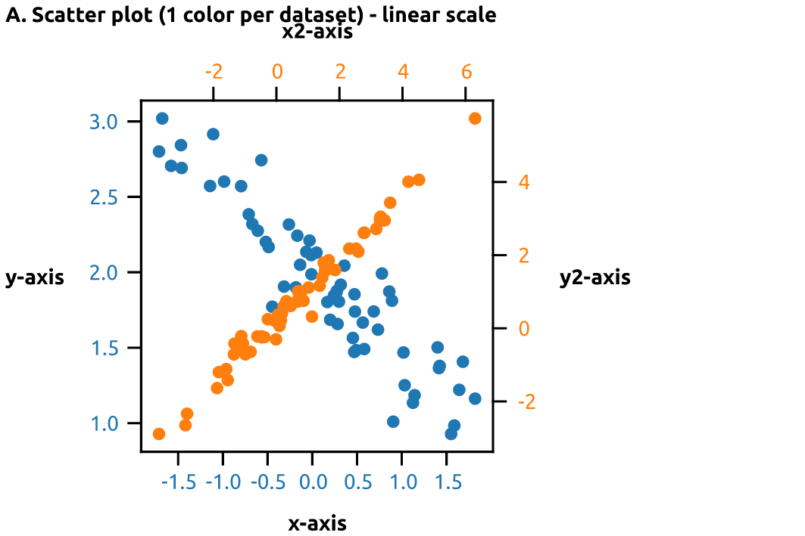
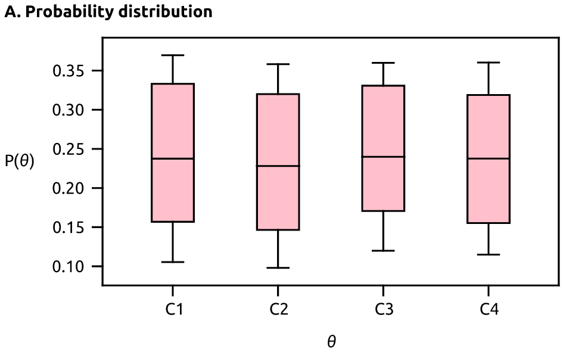
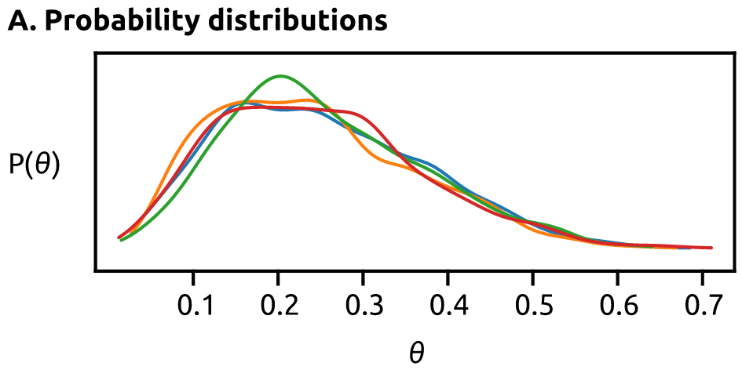
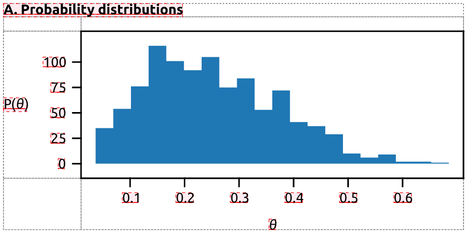
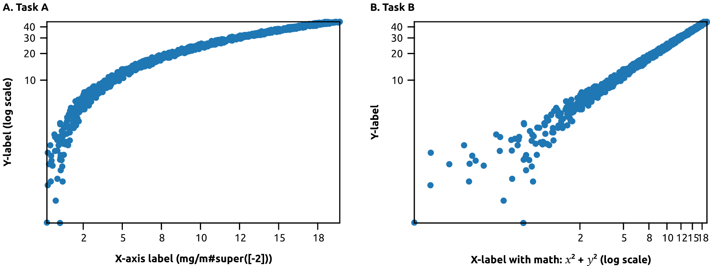
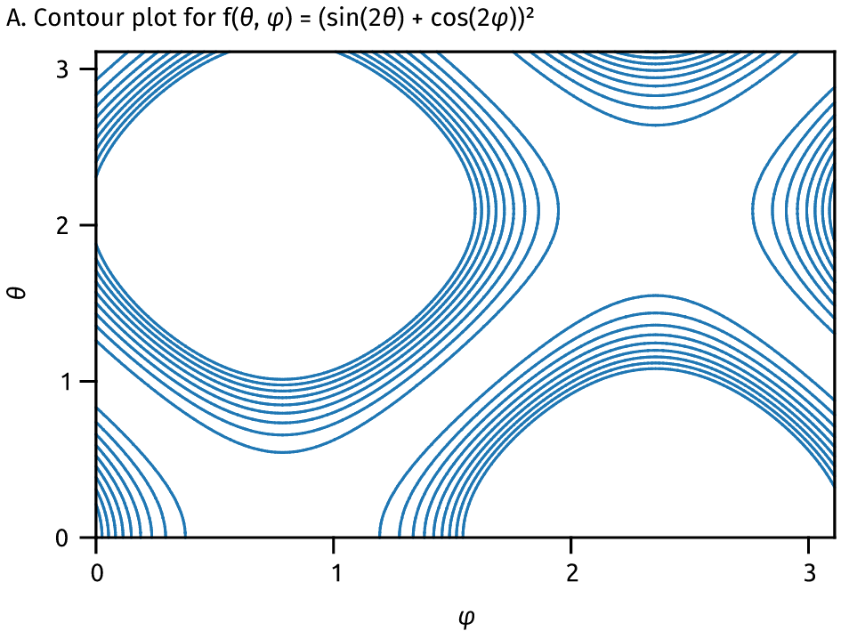

Quartz.Demo (quartz v0.1.0)
Pairwise data plots
Scatter plot examples
Simple scatter plot:
Simple line plot:
Distribution plots
KDE plot examples
Histogram
Layout examples
Side by side plot, showing the use of different scales:
Gridded data
Countour plot
Contour of a function
Summary
Functions
Link to this function
draw_demo_plots(demo_dir)
Link to this function
example_to_png_and_svg(figure, dir, subdir)
Link to this function